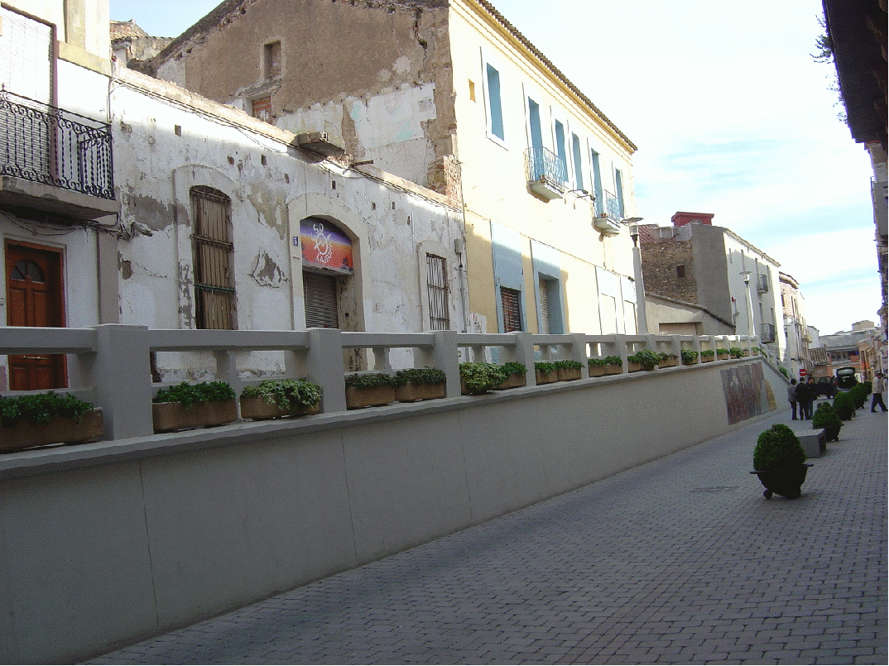
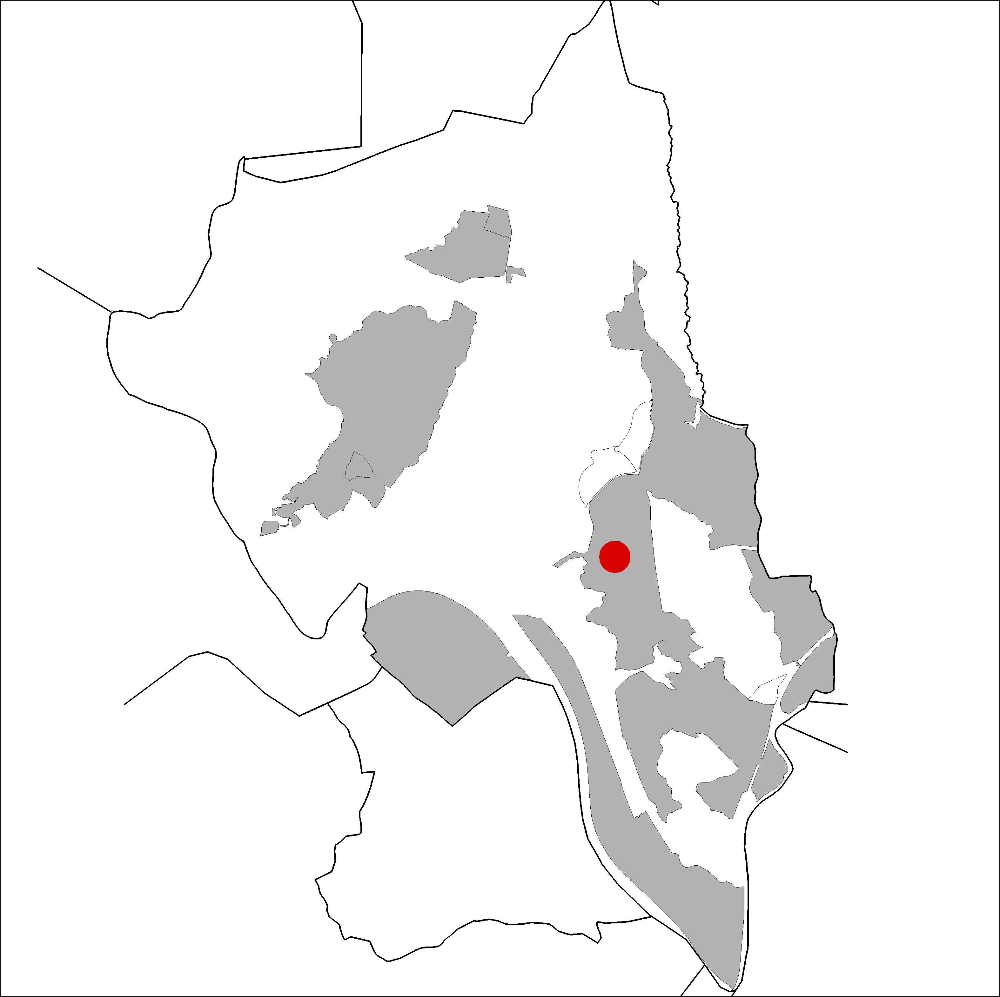

|  |  |
Nom de l’element: La Barana
Clau d’identificació: A.22
Nucli o indret: c/ Pi i Margall.
UTM: X= 414.952, Y= 4.592.156.
Règim del sòl: Sòl
1.1. Època de construcció i tipologia:
Es tracta d’una rèplica exacta a la barana original. Aquesta discorre pel carrer Pi i Margall, de manera que permet a la gent passejar a un nivell superior. Aquesta barana va ser construida amb la finalitat de garantir una seguretat als vianants, doncs el carrer comptava amb un desnivell salvat amb rampa i existia un risc de caiguda. Amb els anys es va convertir en un punt d’aparadors al carrer, així com un punt de trobada i de referència popular.
1.2. Estat de conservació:
Molt bo.
1.3. Ús actual:
Patrimoni cultural.
1.4. Accés:
Accés fàcil des del c/ Pi i Margall.
Patrimoni històric local.
3.1. Usos admesos:
3.2. Condicions d’ordenació:
3.3. Accés i serveis:
Accés des del c/ Pi i Margall.
BPU (Bé Protegit Urbanísticament)